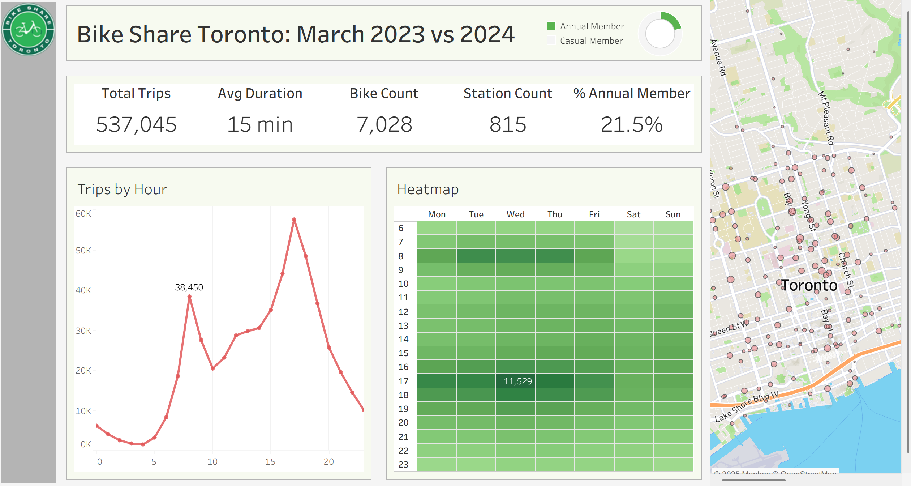

CityBike: Toronto Bike Share Snapshot (Mar 2023 vs Mar 2024)
Summary
Question. For a scoped snapshot: How did Bike Share Toronto usage differ between March 2023 and March 2024, and when/where are the peaks most pronounced?
Why these months? March alone already has ~500k+ trips across the two years—enough to expose hourly/weekday patterns without drowning in volume. I’ll scale later.
Stack. Excel (cleaning/validation) · Tableau (dashboard) · Python/SQL (planned)
Data & Scope
- Source: Bike Share Toronto open data (Trips for Mar 2023 and Mar 2024)
- Core fields: Trip Id, duration, start/end times, station IDs/names, bike ID, user type
- Scope choice: one month per year to keep season similar yet volume high
Planned extension: add adjacent months to test before/after effects of downtown e-scooter restrictions (with citation).
Cleaning Workflow (Excel)
I used Excel to validate and clean both months systematically, with a reproducible Data_issues log.
Goals: fix types, remove duplicates, handle nulls, create analysis-ready columns.
Steps I took
- Type fixes: coerced timestamps to datetime; durations to numeric minutes
- Null handling: filtered rows with missing station IDs/time; documented counts
- De-duplication: removed duplicates by
(start_time, end_time, bike_id)
- Derived columns:
Trip Duration (min),Start Date,Start Hour,Day of Week,Same Station?,Mappable
- Data issues log: tracked anomalies (e.g., negative durations, unmapped station IDs)
Schema Notes (2023 vs 2024)
| Field | 2023 | 2024 | Notes |
|---|---|---|---|
| Trip Id | ✓ | ✓ | unique per ride |
| Trip Duration (sec) | ✓ | ✓ | converted to minutes for visuals |
| Start/End Station Id & Name | ✓ | ✓ | some IDs had outdated names |
| Start/End Time | ✓ | ✓ | coerced to datetime |
| Bike Id | ✓ | ✓ | — |
| User Type | ✓ | ✓ | Annual / Casual |
| Model (bike type) | — | ✓ | New in 2024 |
| Derived: Duration (min), Start Date, Start Hour, Day of Week, Same Station?, Mappable | ✓ | ✓ | created during cleaning |
Stations reference: I found an older stations file with lat/longs. Many new station IDs (2023/2024) weren’t in it, so I flagged them as Unmapped instead of dropping valid trips.
Derived Columns
| Column | Type | How it’s computed | Why it matters |
|---|---|---|---|
Trip Duration (min) |
numeric | duration_sec / 60 (rounded) |
consistent comparisons |
Start Date |
date | date(Start Time) |
daily grouping |
Start Hour |
integer | hour(Start Time) |
peak-hour analysis |
Day of Week |
text | weekday(Start Time) |
weekday vs weekend |
Same Station? |
boolean | Start Station Id == End Station Id |
short loops / returns |
Mappable |
boolean | station ID present in reference file | map readiness |
Data Issues (logged)
Each issue was counted, decisioned, and either fixed or flagged. I repeated the pass for Mar 2024 (with the extra Model field).
| Issue | Fix / Decision | Kept? | Count (example) |
|---|---|---|---|
End Station = NULL |
drop rows (incomplete) | ✗ | 80 |
Trip duration < 1 min |
drop (unlock/return test) | ✗ | 417 |
Trip duration > 24 hr |
drop (logging error) | ✗ | 43 |
| Start station = End station | keep, flagged in Same Station? |
✓ | 6,835 |
| Duplicate Trip Ids | keep first, remove duplicates | ✓ | 0 |
| Inconsistent station names (ID present) | standardize name via ID | ✓ | 15,942 |
| Station ID not in reference (new IDs) | keep trip, mark as Unmapped | ✓ | 22,000 |
Screenshots


Dashboard Snapshot

Prefer the interactive version? View it on Tableau Public.
Findings (So Far)
- Peak hours: weekday 17:00–18:00 strongest; 7–9 AM morning commute visible
- Member mix: Annual vs Casual share shifts year-to-year
- Hotspots: downtown core stations dominate activity
- 2023 → 2024: peak intensity appears higher in 2024 (needs KPI confirmation)
Limits: single month per year; weather unaccounted; no promo/fare context
What’s Next
- Comparison dashboard (Mar 2023 vs Mar 2024 KPIs side-by-side)
- E-scooter policy check with surrounding months (before/after) + citation
- Python/SQL pipeline for reproducible cleaning & station-hour aggregations
- Predictive baseline: simple hourly demand regression for top 10 stations
Repro Notes
- Assumptions: local timezone; station names normalized by ID where possible
- Files referenced:
data_issues.xlsx(in this project folder), screenshots under/images/
- Contact: Feedback welcome—this will expand into a broader 2024 view + policy checks